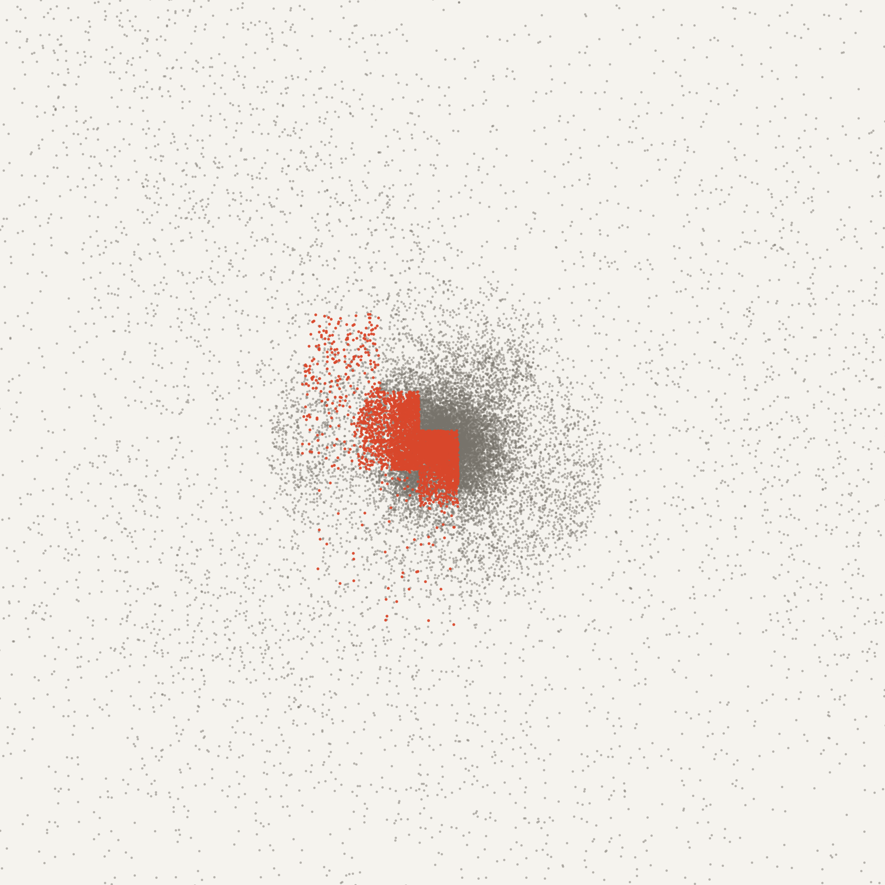
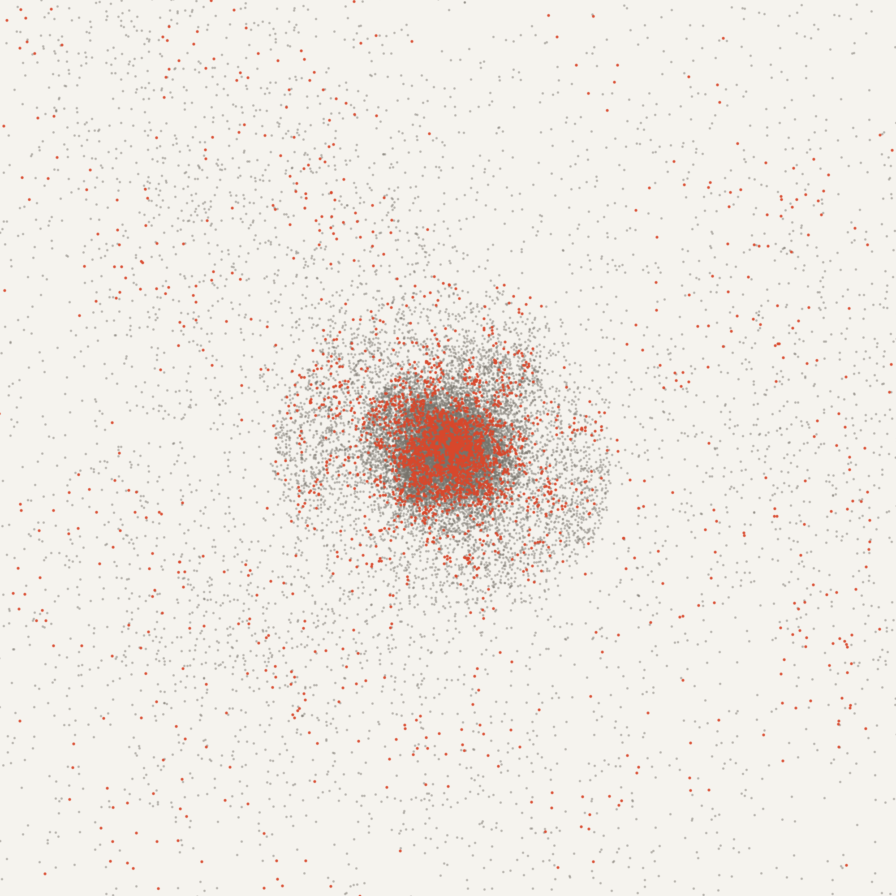

Adaptive Scheduling for Load-Balanced Parallel N-Body Simulation
What the project is, what we built, what we found, how to run the demo, and the questions we are likely to be asked in the viva. Written so that anyone in the team can explain it.

Tanish Hemant Kuvar · 240962540
M. Vishal Kumar · 240962546
Samyak Jain · 240962638
AIML-A · Parallel Computing Architecture and Programming
Code and results: github.com/tanishkuvar11/N-Body-Simulation
00Contents
The project in one minute
The problem, explained with an analogy
The words you need
What we built
The adaptive controller, our main idea
How we know it is correct
Experiments and results
Honest findings and limitations
Running the demo
Viva questions and answers
One-page cheat sheet of numbers
01The project in one minute
We wrote a program that simulates thousands of stars moving under gravity. Every time step it must work out how hard every star pulls on every other star. That is a lot of work, so we split it across:
MPI: several separate programs ("ranks"), the way you would use several computers;
OpenMP: the 8 fast cores ("threads") inside one program;
CUDA: the graphics card (GPU).
The twist: stars clump together. A star inside a clump is much more work to calculate, so if every thread gets the same number of stars, the thread that gets the clump falls behind and the others sit idle. We built a small controller that measures how long each thread takes and, when one is falling far behind, switches OpenMP to a smarter way of sharing the work.
Result in one sentence. The controller is faster than the simple equal-shares schedule on every clustered test (by 1.5–16.6 %) and costs almost nothing when there is no clustering; OpenMP's built-in guided schedule turned out to be just as good or better on our laptop, which we report honestly.
02The problem, explained with an analogy
What is computed
An N-body simulation moves N bodies (stars) forward in small time steps. In each step it (1) computes the gravitational force on every star from all the others, then (2) moves every star a little. Step (1) is the expensive part: done exactly, N stars give N(N−1)/2 pairs, about 2.1 billion pairs per step for N = 65,536.
The shortcut: Barnes–Hut
A group of stars that is far away pulls on you almost exactly like one big star at the group's centre of mass. Barnes–Hut puts all stars into a tree of boxes (an octree: each box split into 8 smaller boxes). For each star we walk the tree; a far box counts as one star, a near box is opened. "Far enough" means box size / distance < θ, with θ = 0.5. This cuts the work from N² to about N log N, with an average force error of only 0.25 %.
Where the imbalance comes from
Analogy: 8 teachers grading 65,536 papers. Most papers are short; papers from crowded regions (stars inside a clump) are long. If the pile is cut into 8 equal stacks, and the stacks are sorted by location, one teacher gets all the long papers. The other seven finish early and wait. Everyone waits for the slowest. That waiting is what we want to remove.
In our program the "stacks are sorted by location" because we sort stars along a Morton (Z-order) curve every step, a zig-zag path through space that keeps neighbouring stars next to each other in memory. That makes the code fast (good cache use, easy tree building), but it also means an equal block of stars is one region of space. When the region contains the clump, that thread has far more work.

Collapsed cloud, 32,768 stars, 8 threads. Vermilion = stars computed by the busiest thread. Left, static: one solid block inside the core (that thread took 3.7× longer than the least-loaded one). Right, after our controller switched to dynamic: its work is spread over the whole cloud.
03The words you need
Word
Meaning in our project
thread
One OpenMP worker; we use up to 8, one per fast CPU core.
rank
One MPI program. "4 ranks" = 4 copies of the program cooperating by sending messages.
OpenMP
Library that splits a loop across threads inside one program (shared memory).
MPI
Library for separate programs that exchange data (distributed memory, clusters).
CUDA
NVIDIA's way to run code on the graphics card. A function that runs there is a kernel.
schedule
How OpenMP shares loop iterations among threads.
static
Equal fixed blocks, decided up front. No overhead, but cannot react to uneven work.
dynamic
Threads grab small chunks (we use 8 stars) whenever they are free. Balances work, small overhead, worse cache locality.
guided
Like dynamic but chunks start large and shrink. Low overhead early, balance at the end.
adaptive
Our controller: starts static, switches to dynamic when imbalance is high, back when it is low.
λ (lambda)
Imbalance = slowest thread's time / average time − 1. 0 = perfect; 0.5 = slowest took 50 % longer.
hysteresis
Two different thresholds (switch up above 0.15, back below 0.05) so the controller does not flip back and forth on noise.
Barnes–Hut, θ
The tree shortcut; θ = 0.5 decides when a box is far enough to count as one star.
softening ε
Small number (0.05) added to distances so two very close stars do not produce an infinite force.
leapfrog
The time-stepping method ("kick–drift–kick"). Simple, second-order accurate, conserves energy well.
Morton order
Sorting stars along a Z-shaped space-filling curve so nearby stars are nearby in memory.
speed-up S(p)
T(1) / T(p): how many times faster with p threads than with 1.
efficiency E(p)
S(p) / p. 100 % = perfect use of all threads.
checksum
A fingerprint of the final star positions. Same checksum = bit-identical result.
pinning
Tying each thread to one specific CPU core.
P-core / E-core
Fast and slow cores of our Intel hybrid CPU (8 P + 12 E).
fp32 / fp64
Single / double precision numbers. Our laptop GPU is 64× slower in fp64.
NVRTC
NVIDIA's run-time compiler: our CUDA code is compiled while the program runs.
Kick + drift: update velocities by half a step and positions by a full step (only for this rank's own stars).
MPI_Allgatherv: every rank sends its stars' new positions and velocities to every other rank, so all ranks have the full picture.
Morton sort: all stars are re-sorted along the Z-curve (identically on every rank).
Octree build: the Barnes–Hut tree is built (every rank builds the same tree).
Force loop: the threads compute forces for this rank's stars. The loop uses schedule(runtime), so the schedule can be changed while the program runs.
Kick: the second half of the velocity update.
Controller: every 5 steps it looks at the thread times and maybe calls omp_set_schedule().
The three levels of parallelism
Level
What is split
How
MPI
Stars between ranks (1–4)
Each rank owns one contiguous Morton block; positions exchanged every step with MPI_Allgatherv.
OpenMP
Stars between threads (1–8)
#pragma omp for schedule(runtime); the controller picks the schedule.
CUDA
Force arithmetic
(a) Tiled all-pairs kernel: each GPU thread handles one star, 256 stars are loaded at a time into fast shared memory. (b) Hybrid: the CPU walks the tree, the GPU computes the close-range pairs.
Things worth knowing about the implementation
Bit-identical results. Every star's force is computed with exactly the same sequence of operations, whichever thread or rank does it, and every rank sorts and builds the same tree. So 1 thread, 8 threads, 4 ranks, static or adaptive all give the same final positions, to the last bit.
No race conditions. In the force loop each thread only writes the forces of its own stars; nothing is shared and written at the same time.
CUDA without Visual Studio. The usual CUDA compiler (nvcc) needs Microsoft's C++ compiler on Windows, which the laptop did not have, so kernels are compiled at run time with NVRTC and launched through the CUDA Driver API.
Accurate timing. MinGW's omp_get_wtime() only measures in 1 ms steps, too coarse for per-thread times, so we use the Windows high-resolution clock (QueryPerformanceCounter).
Vishal's additions: a parallel sort and tree build for large N, --partition cost (split stars between ranks by measured work, not count), --balanced auto (controller tries dynamic, larger-chunk dynamic and guided, keeps the fastest), a disk-galaxy input and an interactive 3D viewer.
05The adaptive controller, our main idea
Time each thread's share of the force loop.
Add the times up over a window of k = 5 steps (one step alone is too noisy).
Compute λ = max(ti) / mean(ti) − 1.
If using static and λ > 0.15 → switch to dynamic (chunks of 8). If using dynamic and λ < 0.05 → switch back to static.
Apply it with omp_set_schedule(policy, chunk); the next force loop uses it.
Our correction to the synopsis's Algorithm 1. Under dynamic, threads keep grabbing work until it is gone, so they all finish at the same moment by construction. The measured λ is then always near 0, the rule "λ < 0.05 → back to static" fires at once, static is unbalanced again, and the controller would flip back and forth forever.
Fix: while dynamic is on, the controller predicts how long each thread would take under static:
Ti = Bi / vi, vi = Wi / ti,
where Bi is the work in thread i's static block (we count tree nodes visited plus interactions per star), Wi is the work the thread actually did and ti its measured time, so vi is its speed. Under static, Wi = Bi, so Ti = ti exactly: the same metric as the synopsis.
Two other practical additions: thread pinning (--pin), because unpinned threads that land on slow E-cores made a perfectly balanced job look 30 % imbalanced; and a new test input, cold collapse, that starts uniform and clumps during the run, which is exactly the case a run-time controller is for.
06How we know it is correct
python scripts/validate.py runs 8 automatic checks; all pass.
Check
What it shows
Result
V1
Same final state for every schedule, thread count (1–8) and rank count (1–4), including forced controller switching
1 checksum across 13 configurations
V1b
Vishal's parallel sort and tree build change nothing
identical for 1, 3, 8 threads
V2
GPU direct kernel matches the CPU
rms error 1.8 × 10−16 (fp64), 1.6 × 10−6 (fp32)
V3
CPU + GPU hybrid gives the same forces as the CPU tree code
energy drift 1.1 × 10−7 (direct), 1.4 × 10−5 (Barnes–Hut)
V6
Leapfrog is second order: halving dt cuts the error 4×
measured 4.05× and 4.02×
V7
The Plummer star cluster starts in equilibrium
virial ratio 0.986 (ideal 1)
07Experiments and results
Setup. Intel i7-14700HX (8 P-cores + 12 E-cores), RTX 4060 Laptop GPU, Windows 11, GCC 15.1 -O3 -march=native, MS-MPI 10.1. Four inputs (uniform as the balanced control, Plummer, colliding clusters, cold collapse); N = 4,096, 16,384, 65,536; 150 steps; 1–8 threads, 1–4 ranks. Every run repeated 3 times in shuffled order; we report the median. A "thermal gate" made later experiments wait until the laptop had cooled down.
5.6–6.4×speed-up with 8 threads (N = 65,536)
9/9clustered cases where adaptive beats static
≤ 2.3 %adaptive vs static on the uniform input
88×GPU fp32 vs 8 CPU threads, exact sum
Imbalance over time (N = 65,536, 8 threads). Top: λ during the run. In the cold collapse (right) the work imbalance stays below 0.05 until t = 1.00 and then rises to 0.64 as the core forms. Orange diamonds are the controller's checks; shaded areas (bottom) are where the adaptive run used dynamic. It switched briefly at t = 0.41 on a timing spike (reverted by the 0.05 threshold) and for good at t = 1.16.Who wins at 8 threads: run time relative to static (below 1 = faster). On clumpy inputs every balancing schedule beats static. Guided (green) is usually best; adaptive (yellow) beats static in all 9 clustered cases. Note the tall orange bar: dynamic is 46 % slower than static on the small uniform job, and adaptive avoids that by staying on static.Speed-up (top) and efficiency (bottom) versus threads, N = 65,536. About 6× with 8 threads, i.e. 70–80 % efficiency. On clustered inputs static (blue) falls lowest.GPU. Left: exact all-pairs force. The fp32 GPU kernel takes 24 ms per step at N = 65,536 against 2,117 ms for 8 CPU threads (88×), with 4.6 × 10−6 error. Right: Barnes–Hut; the CPU + GPU hybrid with 256-star leaves is 1.3–1.4× faster than the CPU alone.MPI. The same job split as ranks × threads (all give the same result). On one laptop, 1 rank × 8 threads is the fastest way to use 8 cores, because each extra rank repeats the sort and tree build and must exchange data. With 16 hardware threads we reach about 7×.
08Honest findings and limitations
Guided was the best fixed schedule in 9 of 12 cases at 8 threads; adaptive won the other 3. Adaptive spends the early, balanced part of every run in static before it notices the clump, and guided's big first chunks keep neighbouring stars together (good for the cache) while its small last chunks fix the imbalance.
A timing spike can cause a false switch. In the MPI experiment (uniform input, 1 rank × 8 threads) adaptive switched to dynamic on noise and was 17 % slower than static. Any time-based trigger has this risk on a noisy laptop.
Imbalance between ranks reached λ = 0.11; our OpenMP controller only balances threads inside a rank. Vishal's --partition cost addresses this: up to 17.2 % faster with 4 ranks on colliding clusters (measured on his Ryzen 7 7730U).
One machine only. "MPI across nodes" was tested with ranks on one laptop, where ranks cost more than threads. On a real cluster the trade-off would be different.
Laptop measurements are noisy: hybrid P/E cores, heat, turbo boost. We handled this with pinning, 3 shuffled repetitions with medians, and the thermal gate; throttled data was discarded and kept in results/archive/ for transparency.
How to say the conclusion. "Our controller reliably beats static scheduling when stars clump and costs almost nothing when they don't, as the synopsis predicted. On this hardware the built-in guided schedule is equally good, so the controller's value is that you never have to choose a schedule by hand."
09Running the demo
Open Anaconda Prompt, then:
cd "E:\BTech 3rd Year (Sem 5)\PCAP-Project" python demo.py
Part
What it shows
What to say
1
Force error 0.25 %; same fingerprint for 1 thread, 8 threads, adaptive
"Splitting the work never changes the answer."
2
Collapsing cloud, static vs adaptive; # bars show λ growing, "manager switched"
"Static can't react to the clump; the controller switches."
3
1 rank × 8 threads vs 4 ranks × 2 threads, same fingerprint
"This is how it would run on a cluster."
4
GPU exact sum and the CPU + GPU hybrid
"The graphics card does the repetitive maths."
5
Opens results/presentation.html: video + graphs
Walk through the animation.
Options: --part N runs one part, --no-pause runs straight through, --details shows the raw program output. If anything fails live, open results/presentation.html directly; it works offline. Vishal's 3D viewer (results/web/viewer.html) needs internet.
First time on a new machine: python -m pip install -r requirements.txt, python build.py --fetch-cuda, then python scripts/validate.py should print 8/8 passed.
10Viva questions and answers
The basics
What is an N-body simulation?
A simulation of N bodies that all interact, here by gravity. Time advances in small steps; each step computes the force on every body and then moves the bodies.
Why is it computationally expensive?
Every body interacts with every other: N(N−1)/2 pairs per step, about 2.1 × 109 at N = 65,536. The cost grows as N².
What is Barnes–Hut and what does θ do?
A tree method: bodies are put into an octree, and a distant box is treated as a single mass at its centre of mass. A box is used whole if size/distance < θ. It reduces the cost to O(N log N). We use θ = 0.5, giving 0.25 % rms force error; smaller θ is more accurate but slower.
What is softening?
We add ε² (ε = 0.05) to the squared distance so that two bodies passing very close do not produce an infinite force.
Which integrator did you use and why?
Leapfrog (kick–drift–kick velocity Verlet). It is second-order accurate and symplectic, so energy stays well conserved over long runs. We verified the second order: halving dt cut the energy error by 4.05× and 4.02×.
Parallelism and OpenMP
What is load imbalance and how do you measure it?
Some threads have more work than others, so the fast ones wait at the end of the loop. We measure λ = max(ti)/mean(ti) − 1 over the threads' loop times; 0 is perfect.
Why does clustering cause imbalance in your code?
A body in a dense region opens more tree nodes, so its force costs more. Because bodies are Morton-sorted, a static block is a region of space, so the thread whose block contains the clump gets most of the expensive bodies (3.7× the work of the lightest thread in our example).
Explain static, dynamic and guided.
Static: iterations divided into equal contiguous blocks up front, no run-time overhead. Dynamic: threads take chunks of c iterations from a shared counter when free, good balance but some overhead and worse locality. Guided: like dynamic, but chunks start large and shrink, combining low overhead with good balance at the end.
How can you change the schedule while the program runs?
The force loop is written with schedule(runtime), which reads the schedule from an internal variable. omp_set_schedule(kind, chunk) sets that variable, and the next parallel loop uses it, with no recompilation.
Why not always use dynamic?
It has per-chunk overhead and loses cache locality. On the small balanced job (N = 4,096, uniform) dynamic was 46 % slower than static; chunk size 1 was also slower than static on clustered input. Adaptive uses static when that is the better choice.
Why is the speed-up only about 6× with 8 threads?
Some parts were sequential (the sort and tree build, about 8 % of a step; Amdahl's law limits the speed-up), the tree walk is limited by memory bandwidth, and laptop timing noise. Vishal later parallelised the sort and tree build (about 2× faster for those parts).
Are there race conditions or false sharing?
No races in the force loop: each thread writes only the accelerations of its own bodies. The per-thread times are written once per loop, and the per-body owner array is only filled when the animation snapshots are requested, to avoid false sharing in normal runs.
Why do you pin threads?
The i7-14700HX has fast P-cores and slow E-cores. Unpinned threads landing on E-cores made a perfectly balanced job show λ ≈ 0.3. Pinning one thread per P-core makes the measured imbalance reflect the workload.
The controller
How does your controller work?
Every k = 5 steps it computes λ from the threads' accumulated loop times. Static and λ > 0.15 → dynamic (chunk 8); dynamic and λ < 0.05 → static. It calls omp_set_schedule.
Why two thresholds?
Hysteresis: with a single threshold, noise around it would make the controller switch back and forth every check. The gap between 0.05 and 0.15 keeps it stable; in our collapse run a noise spike caused one brief switch at t = 0.41 that was reverted after one window.
What did you change from the synopsis's algorithm?
Under dynamic, measured times are always balanced, so the original rule would always switch back and oscillate. We predict the static times instead: Ti = Bi/vi with Bi the work in thread i's static block and vi = Wi/ti its measured speed. Under static this equals the measured time, so it is the synopsis's metric there.
How do you measure per-thread time?
Each thread reads a high-resolution clock (QueryPerformanceCounter) before and after its part of the loop. MinGW's omp_get_wtime only has 1 ms resolution, which is too coarse.
Why didn't your controller beat guided?
It runs static during the early balanced phase and only reacts after a window, and on this hardware guided's overhead is tiny while its large first chunks keep Morton locality. So guided was best in 9 of 12 cases. The controller still beat static in all 9 clustered cases.
Can the controller make things worse?
Yes: a timing spike can trigger a false switch. In one MPI configuration on the uniform input it made the run 17 % slower than static. A higher threshold or a quieter machine avoids it.
MPI
How is work split between MPI ranks?
After sorting, each rank owns one contiguous block of the Morton order. Each step every rank updates its own bodies and then MPI_Allgatherv gives every rank all positions and velocities; every rank builds the full tree and computes forces only for its own block.
Why MPI_Allgatherv and not MPI_Allgather?
The blocks can have different sizes when N is not divisible by the number of ranks (and with cost-based partitioning); the "v" version allows a different count per rank.
Why replicate the tree on every rank?
It is simple and every rank needs far-away information for its own bodies anyway; at our sizes the tree fits easily in memory. The cost is that the sort and tree build are repeated on every rank, which is one reason ranks are slower than threads on a single machine.
Why is 1 rank × 8 threads faster than 4 ranks × 2 threads here?
On one laptop threads share memory for free, while extra ranks repeat the sort and tree build, exchange data every step, and suffer imbalance between ranks (λ up to 0.11), which the OpenMP controller cannot fix.
CUDA
How does your direct-sum CUDA kernel work?
Each GPU thread computes the force on one body. A block of 256 threads loads 256 bodies at a time into fast shared memory, all threads use that tile, then the next tile is loaded (the Nyland et al. "tiled" method from GPU Gems 3).
Why is fp32 so much faster than fp64 on your GPU?
The RTX 4060 Laptop GPU has very little double-precision hardware (about 1/64 of fp32). The fp32 error, 4.6 × 10−6, is far below Barnes–Hut's own 0.25 %.
What is NVRTC and why did you use it?
NVIDIA's run-time compiler. nvcc needs Microsoft's C++ compiler on Windows, which we did not have, so the kernels are compiled while the program runs and launched with the CUDA Driver API. Both libraries are loaded dynamically, so the program also runs without a GPU.
What does the hybrid CPU + GPU mode do?
CPU threads walk the tree and compute far-field forces; the leaves they must open (near field) are recorded as body ranges and the GPU computes those pairs. It pays off with large leaves (256 bodies): 1.3–1.4× faster than the best CPU-only setting.
Results and method
How do you know the results are correct?
8 automatic checks: force accuracy against the exact sum, energy and momentum conservation, second-order convergence, equilibrium of the initial cluster, GPU vs CPU, hybrid vs CPU, and bit-identical results for every thread, rank and schedule combination.
Why are the results bit-identical across thread counts?
Each body's force is computed with the same operation order no matter who computes it; there is no cross-thread summation in the force loop, and the sort is deterministic, so every rank builds the same tree.
How did you deal with noisy measurements?
Pinned threads, 3 repetitions in shuffled order with medians, and a thermal gate that waited until a reference run was within 8 % of normal speed. Data measured while the laptop was throttling was discarded and archived.
What is the main result?
Adaptive beats static in 9 of 9 clustered cases (1.5–16.6 % less time) and stays within 2.3 % of static on uniform input; 8 threads give 5.6–6.4×; the GPU fp32 kernel is 88× faster than 8 CPU threads for the exact sum.
What would you do next?
Balance work between ranks by measured cost (done by Vishal: up to 17.2 % faster), let the controller choose among dynamic and guided (done: --balanced auto), and run on a real multi-node cluster.
Who did what?
[Agree this as a team before the viva: who presents which part, and who answers questions on OpenMP, MPI, CUDA and the results.]
11One-page cheat sheet of numbers
Quantity
Value
Pairs per step, exact, N = 65,536
N(N−1)/2 ≈ 2.1 × 109
Barnes–Hut force error, θ = 0.5
0.25 % rms
Energy drift, direct sum (N = 4,096, t = 2)
1.1 × 10−7
Leapfrog convergence (halve dt)
error ÷ 4.05 and ÷ 4.02
Correctness checks
8/8 passed; 1 checksum across 13 configurations
Speed-up, 8 threads, N = 65,536
5.6–6.4× (efficiency 70–80 %)
Adaptive vs static, clustered inputs, 8 threads
faster in 9/9, by 1.5–16.6 %
Adaptive vs static, uniform input
within 2.3 %
Dynamic vs static, small uniform job (N = 4,096)
46 % slower
Best fixed schedule
guided in 9 of 12 cases, adaptive in 3
Work imbalance, cold collapse
< 0.05 until t = 1.00, peak 0.64
Controller switches in that run
t = 0.41 (brief, noise), t = 1.16 (sustained)
Busiest vs least-loaded thread, static, final frame